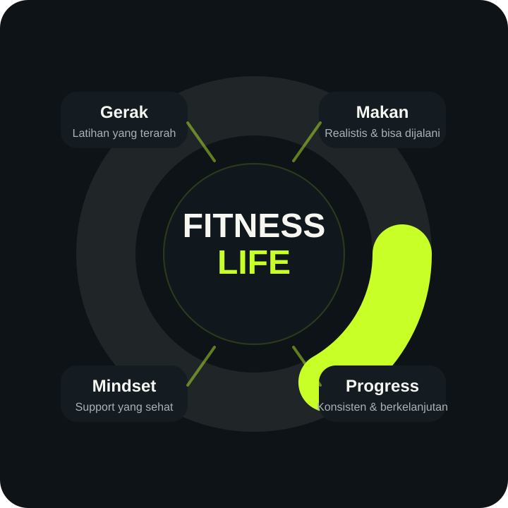
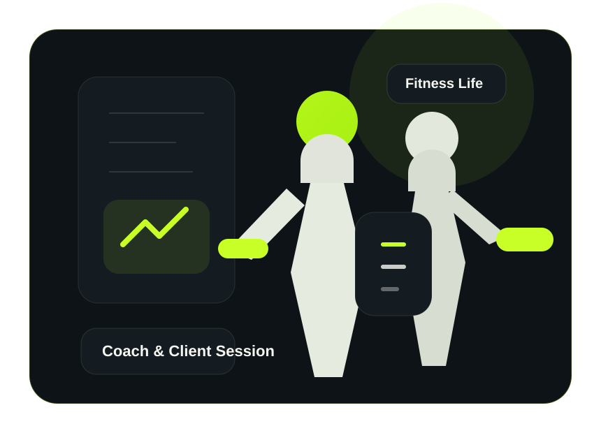

FITNESS LIFE PERSONAL COACHING
Badan lebih fit, kuat, dan percaya diri tanpa bingung mulai, tanpa diet ekstrem, tanpa tekanan toxic.
Kalau kamu capek coba sendiri tapi hasilnya muter di tempat, di sini kamu akan dapat arahan yang jelas, program yang personal, dan support yang benar-benar membantu kamu jalan terus sampai progresmu terasa nyata.
Program personal
Cocok untuk pemula
Online / offline
Latihan yang nyambung sama hidupmu
Bukan program copy-paste yang susah dijalani.
Fokus pada progres yang realistis
Mulai dari kondisi sekarang, bukan dari standar orang lain.
MASALAH YANG PALING SERING BIKIN ORANG GAGAL
Kalau selama ini kamu merasa stuck, masalahnya sering bukan niatmu — tapi arahmu.
Banyak orang sebenarnya sudah niat untuk hidup lebih sehat. Yang bikin berhenti di tengah jalan biasanya bukan karena malas, tapi karena bingung, minder, capek mencoba sendiri, dan tidak punya sistem yang benar-benar cocok dengan hidup mereka.
Masalahnya bukan kamu tidak mampu.
Masalahnya kamu belum dibimbing dengan cara yang tepat.
01
Masuk gym tapi bingung harus mulai dari mana
Alat banyak, info banyak, tapi tetap tidak tahu harus ngapain supaya hasilnya benar-benar terasa.
02
Sudah coba diet berkali-kali tapi susah konsisten
Karena yang dijalani terlalu berat, terlalu ekstrem, atau tidak cocok dengan rutinitas harianmu.
03
Takut di-judge karena masih pemula
Kamu butuh coach yang bikin kamu merasa aman untuk mulai, bukan makin minder untuk bergerak.
04
Butuh hasil, tapi tidak mau dibentuk dengan cara toxic
Kamu ingin progres yang tegas, tapi tetap manusiawi. Dorongan yang kuat tanpa tekanan yang merusak mental.
KENAPA PENDEKATAN INI LEBIH MUDAH JALAN
Bimbingan fitness yang personal, jelas, dan benar-benar mendampingi.
Bukan sekadar kasih program lalu hilang. Di sini kamu dibimbing dengan pendekatan yang menyesuaikan tubuh, target, tantangan, dan ritme hidupmu.
Program sesuai tubuh dan targetmu
Setiap orang punya titik awal yang berbeda, jadi programmu tidak dibuat asal sama rata.
Penjelasan simpel tanpa jargon ribet
Kamu tidak harus jadi ahli fitness untuk bisa jalan. Semuanya dibuat jelas dan gampang diikuti.
Supportive coaching, bukan tekanan toxic
Tegas saat dibutuhkan, suportif saat kamu goyah, dan selalu fokus pada progres yang sehat.
Solusi untuk masalah nyata
Dari takut gym, bingung latihan, sampai sulit konsisten — semuanya ditangani dengan pendekatan relevan.
Fleksibel dan worth it
Kamu bisa mulai dari level pendampingan yang paling pas, tanpa harus memaksakan paket yang terlalu berat.
Fokus pada hasil yang bertahan
Bukan semangat 3 hari. Yang dibangun adalah kebiasaan, kepercayaan diri, dan progres yang berkelanjutan.
FILOSOFI FITNESS LIFE
Fitness bukan soal memaksa tubuhmu jadi sempurna. Ini soal membangun hidup yang lebih kuat, lebih stabil, dan lebih percaya diri.
Karena itu pendekatan Fitness Life selalu berdiri di atas empat pilar: gerak yang terarah, makan yang realistis, mindset yang kuat, dan progres yang konsisten. Saat keempatnya nyambung, kamu bukan cuma terlihat lebih fit — kamu juga hidup dengan energi yang lebih baik.
- Gerak: latihan yang jelas dan bisa diikuti.
- Makan: arahan yang realistis, bukan diet drama.
- Mindset: dibimbing tanpa dibuat minder.
- Progress: hasil dibangun dengan konsistensi, bukan panik instan.

PROGRAM YANG BISA DIPILIH
Pilih jalur yang paling cocok untuk target dan level komitmenmu.
Setiap program dirancang untuk memberi arah yang jelas, support yang konsisten, dan progres yang realistis.
Kickstart Coaching
Cocok untuk kamu yang baru mau mulai dan butuh arahan simpel yang langsung bisa dijalankan.
- Konsultasi awal dan mapping target
- Arahan latihan dasar sesuai level
- Panduan membangun kebiasaan awal
- Support untuk mulai lebih percaya diri
Personal Transform
Untuk kamu yang ingin progres lebih terarah dengan program yang lebih personal dan pendampingan lebih intens.
- Assessment target, tubuh, dan ritme hidup
- Program latihan personal
- Habit guidance & support berkala
- Evaluasi dan penyesuaian program
Signature Intensive
Pendampingan lebih dekat untuk kamu yang ingin lebih serius, lebih terstruktur, dan lebih fokus pada hasil.
- Monitoring dan evaluasi lebih detail
- Pendekatan mindset dan konsistensi
- Penyesuaian strategi lebih cepat
- Support yang lebih dekat selama program
PROSES YANG JELAS
Mulainya simpel. Prosesnya jelas. Progresnya terarah.
Kamu tidak akan disuruh nebak-nebak sendiri. Dari awal sampai evaluasi, semua punya alur yang gampang dipahami.
Konsultasi awal
Kita bahas targetmu, tantanganmu, rutinitasmu, dan kondisi awalmu secara jujur.
Program disesuaikan
Kamu akan dapat arahan yang dibuat sesuai tubuh, level, dan ritme hidupmu.
Jalani dengan bimbingan
Semua langkah dijelaskan dengan bahasa yang sederhana supaya kamu tidak bingung saat menjalankan.
Evaluasi & upgrade
Progress dicek, strategi disesuaikan, dan kamu terus dibantu supaya tetap konsisten.
VISUAL PROGRES
Bukan cuma capek latihan. Yang dicari client adalah perubahan yang terasa dan bisa dipertahankan.
Ilustrasi visual tentang yang akan kamu dapatkan bila kamu berlatih dengan FitLife Coach
Latihan jadi punya arah
Tidak lagi datang ke gym hanya untuk bingung. Kamu tahu apa yang harus dilakukan dan kenapa itu dilakukan.
Pola makan lebih tertata
Bukan dipaksa sempurna, tapi diarahkan agar lebih realistis dan bisa dijalani setiap hari.
Rasa percaya diri naik
Saat progres mulai terasa, tubuhmu berubah, energi naik, dan kamu makin yakin dengan dirimu sendiri.
Geser slider untuk melihat ilustrasi progres visual sebelum dan sesudah.
CERITA PROGRES YANG INGIN DICAPAI CLIENT
Yang biasanya berubah bukan cuma badan.
Saat seseorang dibimbing dengan strategi yang tepat, yang ikut berubah juga adalah kejelasan, kebiasaan, mental, dan rasa percaya dirinya.
Akhirnya ngerti harus ngapain setiap latihan
Dari bingung total jadi punya arah yang jelas, step by step, dan tidak lagi mengandalkan asal-asalan.
Lebih konsisten tanpa merasa tersiksa
Karena sistemnya tidak dibuat untuk menghukummu, tapi untuk membantumu terus jalan dengan lebih stabil.
Lebih pede dengan tubuh dan rutinitas sendiri
Progress kecil yang konsisten membuatmu merasa lebih kuat, lebih rapi, dan lebih percaya diri menjalani hari.
Turun berat badan tanpa harus merasa tersiksa
Client ingin melihat perubahan yang nyata, tapi tetap dengan proses yang masuk akal, tidak ekstrem, dan bisa dijalani tanpa membenci setiap langkahnya.

TENTANG PERSONAL TRAINER
Coach yang paham targetmu — dan paham rasanya mulai dari nol.
Dulu, Coach Fitlife bukan orang yang langsung percaya diri di dunia fitness. Mulai dari tubuh yang kurang ideal, bingung harus latihan apa, sampai mencoba berbagai program yang tidak terasa cocok — semua pernah dilewati.
Dari situlah satu hal jadi jelas: bukan semua orang gagal karena tidak mampu, tapi karena mereka tidak dibimbing dengan cara yang tepat.
Sekarang, pendekatan yang dibawa bukan lagi sekadar “latihan keras”, tapi bagaimana membantu setiap orang menemukan cara yang bisa mereka jalani — tanpa merasa tertekan, tanpa merasa dihakimi.
Personal approach
Komunikatif
Supportive
Non-toxic
Conversion-focused
Saya Mau Tanya Detail
PILIH LEVEL PENDAMPINGANMU
Mulai dari yang paling pas untukmu sekarang.
Kami menyesuaikan kebutuhanmu, dengan beberapa tingkatan level coaching kami, jadi pilih sekarang yang sesuai dengan mu!
Starter
Untuk yang ingin mulai dengan arahan yang jelas tanpa merasa kewalahan.
- Konsultasi awal
- Panduan latihan dasar
- Arahan kebiasaan awal
- Cocok untuk pemula
Growth
Untuk yang ingin program lebih personal, evaluasi lebih rutin, dan support lebih dekat.
- Assessment & custom plan
- Progress monitoring
- Habit guidance
- Evaluasi berkala
Intensive
Untuk client yang ingin pendampingan lebih dekat dan lebih serius mengejar hasil.
- Monitoring intens
- Penyesuaian strategi cepat
- Support lebih dekat
- Fokus hasil maksimal
PERTANYAAN YANG PALING SERING MUNCUL
Hal-hal yang biasanya bikin orang ragu untuk mulai.
FAQ ini ditulis agar kamu lebih yakin lagi untuk memulai tanpa menunggu nanti, dan memulainya sekarang.
Apakah program ini cocok untuk pemula?
Iya. Justru struktur copy dan flow landing page ini dibuat untuk membuat pemula merasa nyaman, paham, dan tidak takut mulai. Programnya bisa diarahkan bertahap sesuai level.
Apakah saya harus sudah fit dulu untuk mulai?
Tidak. Kamu tidak perlu “jadi siap dulu” untuk mulai. Pendekatan terbaik justru membantu kamu bergerak dari kondisi sekarang dengan langkah yang realistis.
Kalau saya sibuk, apakah masih bisa ikut?
Bisa. Program dan komunikasi bisa disesuaikan dengan ritme hidupmu supaya tetap masuk akal dan lebih mudah konsisten.
Kenapa CTA-nya diarahkan ke WhatsApp?
Karena untuk jasa personal training, percakapan langsung jauh lebih efektif untuk closing. Calon client bisa cepat merasa dilayani, sementara coach bisa langsung memahami target dan kendala mereka.
Bagaimana jika saya belum tahu paket mana yang cocok?
Mulai saja dari chat WhatsApp. Nanti kebutuhanmu bisa dipetakan dulu, lalu coach merekomendasikan paket yang paling pas.
SUDAH SIAP MULAI?
Tubuh yang kamu inginkan tidak dibangun dari niat “nanti”. Mulainya dari sekarang.
Isi form singkat ini lalu klik kirim. Website akan langsung membuka WhatsApp untuk melakukan konsultasi langsung oleh FitLife Coach.
Tanpa spam
Tanpa tekanan
Langsung masuk ke WhatsApp